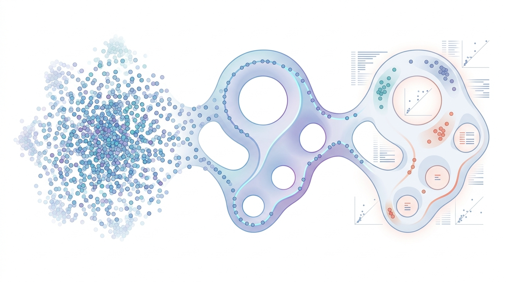

TDA for Medical Data
TDA for Medical Data
Topological Data Analysis for BRCA Breast Cancer Genomics

Overview
Topological Data Analysis (TDA) is a rapidly growing branch of applied mathematics and machine learning that extracts shape-based features from data. Unlike conventional statistical or geometric methods that depend on metric choices and assumptions of linearity, TDA captures intrinsic topological invariants — connected components (H0), loops (H1), voids (H2), and higher-dimensional structures — that persist across multiple scales.
My research explores how TDA can be applied across medical, biological, and AI domains to extract patterns that traditional pipelines often miss: from genomic subtype discovery, to cohort stratification of disease progression, to robustness analysis of deep learning models. The unifying theme is using shape as a complementary signal to numerical statistics.
Persistent Homology & Mapper
Two core TDA techniques drive most of this work:
- Persistent Homology tracks topological features across a continuum of scales, producing persistence diagrams and barcodes. These representations are stable under small perturbations, making them ideal for noisy biomedical data.
- Mapper Algorithm generates a graph-based summary of high-dimensional data, exposing branching and cyclic structures that reflect biological progression, treatment response trajectories, or class boundaries.
Both can be combined with deep learning via persistence images, persistence landscapes, or differentiable persistence layers to train end-to-end models that respect topology.
Application Areas
- Cancer Genomics & BRCA Analysis: Apply TDA to gene-expression and mutation data (TCGA / BRCA cohorts) to discover novel topological biomarkers and refine molecular subtype classifications.
- Biosignal Processing (EEG / ECG / EMG): Extract topological features from physiological time series for anomaly detection, seizure prediction, and arrhythmia classification.
- Medical Image Analysis: Use cubical or alpha complex persistence on tumors and tissue scans to capture morphology beyond pixel-wise statistics.
- Drug Discovery & Molecular Design: Apply persistent homology to molecular point clouds, protein-ligand interaction networks, and binding pocket geometries — guiding virtual screening, lead optimization, and structure-based drug design with shape-aware features.
- Adversarial Robustness: Investigate TDA-based detectors for adversarial examples — generative-AI-driven perturbations often shift topological signatures even when imperceptible to humans.
- Patient Stratification: Use Mapper to identify subgroups in clinical cohorts that share latent disease trajectories, supporting personalized treatment decisions.
Why TDA for Medical Data?
Medical datasets are typically high-dimensional, noisy, heterogeneous, and small in sample size — conditions that often defeat purely statistical or fully data-hungry deep learning approaches. TDA provides a complementary lens: it is noise-tolerant, coordinate-free, and multiscale. Topological features remain meaningful even with few samples, and they often align with clinically interpretable structures (e.g., disease subtypes form distinct connected components or loops).
Combined with modern ML, TDA enables hybrid pipelines: shape features extracted by persistent homology are fed into neural networks, gradient-boosted models, or used as priors in Bayesian frameworks — leading to more robust, more interpretable models.
Current Project — TDA on BRCA Cohorts
In collaboration with Permillion, I am applying TDA to BRCA breast cancer datasets (TCGA + supplementary public sources) to discover novel variables and hidden topological structures that conventional statistical methods cannot identify. The goal is to find new biomarkers and feature patterns that improve subtype classification, prognosis, and treatment-response prediction.
Tools & Frameworks
Reading List
- Topology and Data — Gunnar Carlsson, Bulletin of the AMS, 2009
- Persistence Barcodes for Shapes — Carlsson, Zomorodian et al., Discrete & Computational Geometry, 2005
- Topology Based Data Analysis Identifies a Subgroup of Breast Cancers with a Unique Mutational Profile and Excellent Survival — Nicolau, Levine, Carlsson, PNAS 2011
- A Survey of Topological Machine Learning Methods — Hensel, Moor, Rieck, Frontiers in AI 2021
- A Roadmap for the Computation of Persistent Homology — Otter et al., EPJ Data Science 2017
- Deep Learning with Topological Signatures — Hofer et al., NeurIPS 2017
- PersLay: A Neural Network Layer for Persistence Diagrams and New Graph Topological Signatures — Carrière et al., AISTATS 2020
- Topological Data Analysis of Single-Cell Hi-C Contact Maps — Chen et al., Scientific Reports 2019
- Topological Autoencoders — Moor et al., ICML 2020
- Topological Methods for Genomics: Present and Future Directions — Camara et al., Nature Biotechnology 2022
- Persistent-Homology-based Machine Learning and Its Applications — A Survey (incl. drug design) — Pun, Lee, Xia, J. Comp. Chem. 2017
- TopologyNet: Topology-Based Deep Convolutional Neural Networks for Biomolecular Property Predictions — Cang & Wei, J. Chem. Inf. Model. 2017